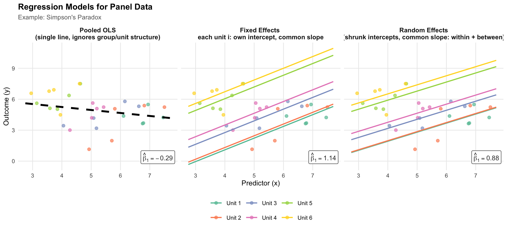

Code
if (!requireNamespace("lme4", quietly = TRUE)) install.packages("lme4")
library(tidyverse)
library(lme4)
library(RColorBrewer)
set.seed(42)
n_units <- 6
n_obs <- 5 # few obs per unit → θ ≈ 0.70, making RE visibly distinct from FE
# Simpson's paradox: between-unit trend is negative, within-unit trend is positive.
# Smaller unit spread + higher within noise keeps θ well below 1, so RE ≠ FE.
unit_x0 <- seq(6.5, 3.5, length.out = n_units) # unit mean x (high → low)
unit_y0 <- seq(3.5, 6.5, length.out = n_units) # unit mean y (low → high)
df <- map_dfr(seq_len(n_units), function(i) {
x <- unit_x0[i] + rnorm(n_obs, 0, 0.70)
y <- unit_y0[i] + 0.85 * (x - unit_x0[i]) + rnorm(n_obs, 0, 0.80)
tibble(unit = factor(paste0("Unit ", i)), x = x, y = y)
})
unit_levels <- levels(df$unit)
xs <- seq(min(df$x) - 0.2, max(df$x) + 0.2, length.out = 80)
# ---- OLS ----
ols_fit <- lm(y ~ x, data = df)
ols_slope <- as.numeric(coef(ols_fit)["x"])
ols_lines <- tibble(
x = xs, y = as.numeric(coef(ols_fit)[1]) + ols_slope * xs,
unit = "Overall", model = "OLS"
)
# ---- Fixed Effects ----
fe_fit <- lm(y ~ x + unit, data = df)
fe_slope <- as.numeric(coef(fe_fit)["x"])
fe_ints <- setNames(
c(coef(fe_fit)["(Intercept)"],
coef(fe_fit)["(Intercept)"] + coef(fe_fit)[paste0("unit", unit_levels[-1])]),
unit_levels
)
fe_lines <- map_dfr(unit_levels, function(u) {
tibble(x = xs, y = as.numeric(fe_ints[u]) + fe_slope * xs, unit = u, model = "Fixed Effects")
})
# ---- Random Effects (random intercept, ML) ----
# With our data, Cov(x_it, α_i) ≠ 0, so RE is biased: its slope will sit between
# the FE slope (within only) and the OLS slope (within + between confounded).
re_fit <- lmer(y ~ x + (1 | unit), data = df, REML = FALSE)
re_slope <- as.numeric(fixef(re_fit)["x"])
re_int <- as.numeric(fixef(re_fit)["(Intercept)"])
re_blup <- data.frame(
unit = rownames(ranef(re_fit)$unit),
ran = ranef(re_fit)$unit[[1]]
)
re_lines <- map_dfr(unit_levels, function(u) {
ri <- re_blup$ran[re_blup$unit == u]
tibble(x = xs, y = re_int + ri + re_slope * xs, unit = u, model = "Random Effects")
})
# ---- Combine ----
model_levels <- c("OLS", "Fixed Effects", "Random Effects")
lines_all <- bind_rows(ols_lines, fe_lines, re_lines) %>%
mutate(model = factor(model, levels = model_levels))
scatter_all <- map_dfr(model_levels, function(m) {
df %>% mutate(model = factor(m, levels = model_levels))
})
# ---- Slope annotations (one per panel) ----
slope_ann <- tibble(
model = factor(model_levels, levels = model_levels),
slope = c(ols_slope, fe_slope, re_slope),
label = paste0("hat(beta)[1] == ", round(c(ols_slope, fe_slope, re_slope), 2))
)
# ---- Colours ----
unit_colours <- c(
setNames(brewer.pal(n_units, "Set2"), unit_levels),
"Overall" = "black"
)
# ---- Plot ----
ggplot() +
geom_point(
data = scatter_all,
aes(x = x, y = y, colour = unit),
size = 2.0, alpha = 0.70
) +
geom_line(
data = lines_all %>% filter(unit != "Overall"),
aes(x = x, y = y, colour = unit),
linewidth = 0.85
) +
geom_line(
data = lines_all %>% filter(unit == "Overall"),
aes(x = x, y = y),
colour = "black", linewidth = 1.4, linetype = "dashed"
) +
geom_label(
data = slope_ann,
aes(label = label),
x = Inf, y = -Inf, hjust = 1.08, vjust = -0.5,
size = 3.6, parse = TRUE,
fill = alpha("white", 0.85), colour = "grey20", label.size = 0.3
) +
scale_colour_manual(values = unit_colours) +
facet_wrap(
~model, nrow = 1,
labeller = as_labeller(c(
"OLS" = "Pooled OLS\n(single line, ignores group/unit structure)",
"Fixed Effects" = "Fixed Effects \neach unit i: own intercept, common slope",
"Random Effects" = "Random Effects\n(shrunk intercepts, common slope: within + between)"
))
) +
labs(
title = "Regression Models for Panel Data",
subtitle = "Example: Simpson's Paradox",
x = "Predictor (x)",
y = "Outcome (y)",
colour = NULL
) +
theme_minimal(base_size = 11) +
theme(
strip.text = element_text(face = "bold", size = 10),
legend.position = "bottom",
legend.key.width = unit(1.5, "lines"),
plot.title = element_text(face = "bold", size = 13),
plot.subtitle = element_text(size = 10, colour = "grey40"),
panel.grid.minor = element_blank()
)